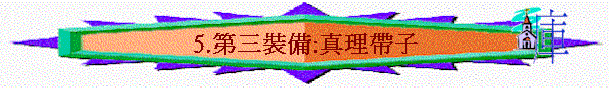

「所以要站穩了，用真理當作帶子束腰，用公義當作護心鏡遮胸，」弗6:14
一.真理的源頭
1.主的道
「你們既聽見真理的道，就是那叫你們得救的福音，也信了基督，既然信他，就受了所應許的聖靈為印記。」弗1:13
「你們學了基督，卻不是這樣。」弗4:20
2.神的形象
「並且穿上新人；這新人是照著神的形像造的，有真理的仁義和聖潔。」弗4:24
3.真理的靈
「就是真理的聖靈，乃世人不能接受的；因為不見他，也不認識他。你們卻認識他，因他常與你們同在，也要在你們裡面。」約14:17
二.真理的帶子
1.分辨真假
「直等到我們眾人在真道上同歸於一，認識神的兒子，得以長大成人，滿有基督長成的身量，使我們不再作小孩子，中了人的詭計和欺騙的法術，被一切異教之風搖動，飄來飄去，就隨從各樣的異端；」弗4:13-14
～魔鬼有很多欺騙的手法與詭計，人將真理成帶子，隨身携帶，就能分辨是非，辨清真假，不受揺動
2.約束自己
「良心既然喪盡，就放縱私慾，貪行種種的污穢。」弗4:19
「所以要約束你們的心，（原文作束上你們心中的腰）謹慎自守，專心盼望耶穌基督顯現的時候所帶來給你們的恩。你們既作順命的兒女，就不要效法從前蒙昧無知的時候那放縱私慾的樣子。」彼前1:13-14
～魔鬼想我們放縱自己，帶子的作用是能約束其他衣物，在屬靈裡，我們以真理約束我們的心，如心中有真理的腰帶，不放縱自己，常以真理謹守自己
3.加增能力
「他以能力束腰，使膀臂有力。」箴31:17
～當運動員束上帶子時，會更有力參與比賽，人按真理而行，真理使人更有力得勝撒旦，使人能剛強行天路